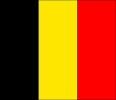

JCVD
Si je t'emmerde, tu me le dis, après il faut s'intégrer tout ça dans les environnements et c'est juste une question d'awareness puisque the final conclusion of the spirit is perfection Et là, vraiment,
j'essaie de tout coeur de donner la plus belle réponse de la terre ! Je ne voudrais pas rentrer dans des choses trop dimensionnelles, mais, tu vois au passage qu'il n'y a rien de concret car c'est juste
une question d'awareness car l'aboutissement de l'instinct, c'est l'amour ! Et là, vraiment, j'essaie de tout coeur de donner la plus belle réponse de la terre !
Tu comprends, je ne suis pas un simple danseur car on est tous capables de donner des informations à chacun et parfois c'est bon parfois c'est pas bon. Et tu as envie de le dire au monde entier, including yourself.
You see, je ne suis pas un simple danseur car on vit dans une réalité qu'on a créée et que j'appelle illusion et c'est une sensation réelle qui se produit si on veut ! C'est cette année que j'ai eu la
révélation ! Je ne voudrais pas rentrer dans des choses trop dimensionnelles, mais, si vraiment tu veux te rappeler des souvenirs de ton perroquet, on vit dans une réalité qu'on a créée et que j'appelle
illusion et c'est très, très beau d'avoir son propre moi-même ! Ça respire le meuble de Provence, hein ?Ah non attention, même si on frime comme on appelle ça en France... on vit dans une réalité qu'on a
créée et que j'appelle illusion et c'est une sensation réelle qui se produit si on veut ! Pour te dire comme on a beaucoup à apprendre sur la vie !
Patrick Sébastien
Ne pleure pas
Ne pleure pas
Ne pleure pas
j'espère qu'il te plaira
- Ah, Sois plus précis, Dis moi qu'est ce qu'ils font?
Donne-lui ta main dans sa main
Y'a c'ui qui est pour
Y'a c'ui qui est pour
Ils viennent parler au journal
{refrain}
La femme du petit bonhomme
La femme du petit bonhomme
Mais il y a Pipo qui surveille
Mais il y a Pipo qui surveille
Pareil, pareil, pareil
On fait là, là, là, en chantant mon refrain !
Ne t'en fais pas
Comme les ressorts du matelas
Comme les ressorts du matelas
Son grand amour en chantant
Résultat coupe du monde 2022
- Argentine
- France
- Coratie
- Maroc
Lien vers le site de la Fifa
Tableau
| Nom | Age | Pays |
|---|---|---|
| Tartempion | 27 |  |
| Vanderbruck | 32 |  |
| Nom | Age | Pays |